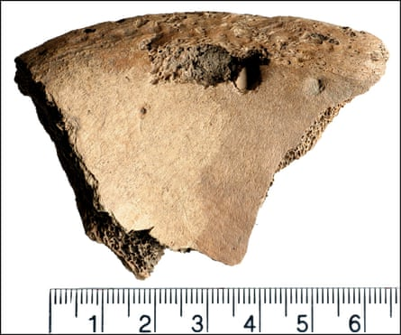

Bite marks from a lion on a man’s skeleton, excavated from a 1,800-year-old cemetery on the outskirts of York , provide the first physical evidence of human-animal combat in the Roman empire, new research claims.
While clashes between combatants, big cats and bears are described and depicted in ancient texts and mosaics, there had previously been no convincing proof from human remains to confirm that these skirmishes formed part of Roman entertainment.
Prof Tim Thompson, an anthropologist and first author on the study at Maynooth University in Ireland, said: “This is the first time we have physical evidence for gladiators fighting, or being involved in a spectacle, with big cats like lions in the Roman empire.”
Excavations at the Driffield Terrace burial site, near York city centre, began more than 20 years ago and uncovered about 80 decapitated skeletons. Most belonged to well-built young men and bore signs of brutal violence, leading experts to suspect they had uncovered a gladiator graveyard.
Part of the male skeleton’s hip bone.Photograph: Unique osteological evidence for human-animal gladiatorial combat in Roman Britain
One of the skeletons, belonging to a man aged 26 to 35, was buried in a grave with two others and overlaid with horse bones. The remains showed puncture marks on the pelvis, initially thought to be animal bites. However, it took years of extensive work to confirm the injuries were inflicted by a large carnivore.
The researchers scoured clinical and forensic literature for descriptions of bite marks made by various animals, but found little on the big cats Romans might have encountered. So they teamed up with zoos in Britain, which provided them with horse bones that had been chewed by cheetahs, lions, tigers and leopards for comparison.
The bite marks on the man’s hip matched those made by lions, but big cats typically kill by biting their prey’s head or neck, Thompson said.
“The pelvis is unusual. You can survive that injury, it’s not fatal,” he said. “We think the individual had been incapacitated and that these marks are evidence of the animal dragging the body away.”
The man might have been fatally injured in combat before he was seized by the animal, Thompson added.
Roman gladiators typically fought each other, but other combatants known as bestiarii would take on dangerous and exotic animals as part of the games.

A researcher holds the ancient hip bone with the lesion.Photograph: Unique osteological evidence for human-animal gladiatorial combat in Roman Britain
Dr John Pearce, an archaeologist from King’s College London and co-author of the study published in Plos One, said York doubled as a Roman town and legionary fortress at the time, making it the second largest population centre in Britain after Londinium.
He said: “These may be gladiators who trained in a gladiatorial school at York linked to the Roman legion based there, and their comrades from the arena or training ground took responsibility for burying them.”
If the researchers are right, their discovery raises questions about where gladiators fought their battles.
An arena probably exists beneath the city of York, but uncovering it will not be easy. “One of challenges with York is that so many old buildings are preserved, you can’t do the excavations underneath them,” Thompson said.
It is not the only mystery that remains. “This shifts the conversation,” Thompson added. “We now know that these events happened in the provinces of the Roman empire, but it raises other questions. How, for example, do you get a lion from Africa to York?”